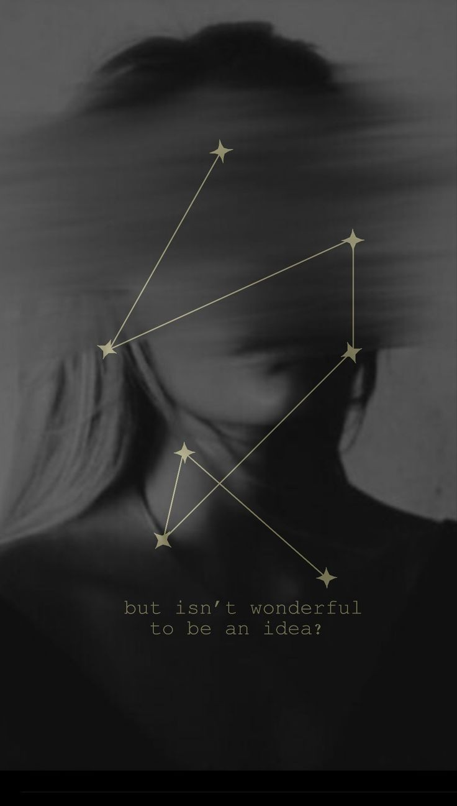

| Percy Jackson |
|
- Es es personaje principal de mi saga de libros favoritos
- Es sarcástico, divertido, leal, amable y un gran guerrero
- Además es muy guapo e hijo de un dios griego
|
| Kaz brekker |
|
- Pertenece a la bilogía de "Six of Crows"
- Es muy inteligente, siempre tiene un plan super ingenioso, y tiene una moral gris
- Es un personaje excéntrico y con muchos traumas, lo que lo hace muy humano
|
| Jude Duarte |
|
- Pertenece a la trilogía "The cruel prince"
- Es una gran guerrera que no se deja amedrentar por nadie, sabe lo que quiere y siempre encuentra la forma de conseguirlo
- Es un personaje que apesar de que cometió muchos errores nunca lo odié, ni se me hicieron tontas las desiciones que tomó
|
| Addie LaRue |
 |
- Pertenece al libro "la vida invisible de Addie LaRue"
- Es muy humana, tiene miedos, y enfrenta problemas tanto cotidianos, como de epocas pasadas
- Su forma de ver al mundo es especial
|